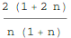

東京大学 2018年 理科 第2問
問題
数列を(n=1,2,...)で定める。
(1) n≥2とする。を既約分数として表したときの分母と分子を求めよ。
(2) が整数となるn≥ 1をすべて求めよ。
解答
(1)

分母は連続する2整数なので必ず偶数になり、分子の2と約分できる。
n,n+1,2n+1は互いに素なので、求める答えは
(2)
n=1,2,3,...10のとき を求める。
を求める。
また、
であるから、n≥4のとき、すなわち。
特にだから、n≥8のとき常にであり、整数となる は存在しない。
は存在しない。
以上より、が整数となるnはn=1,2のみである。
補足・感想
数学的に厳密ではない(以下の例ではn=101までしか正しいことを確かめていない)が、以下のようにFindSequenceFunctionを使った場合も上手く求まる(n=2から始めているので、得られた答えをn→n-1に書き換えていることに注意)。